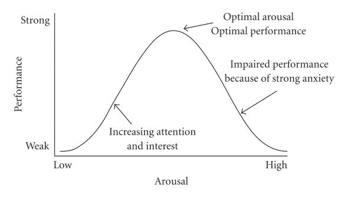

Individual Zones of Optimal Functioning (IZOF)
Learn how emotions and arousal affect performance and how athletes can find their personal optimal zone.

Inverted-U model illustration of IZOF.
What is IZOF?
- IZOF stands for Individual Zones of Optimal Functioning.
- It explains how emotional states and arousal levels influence performance.
- Each athlete has a unique zone where they perform best, unlike universal models.
Key Idea: Everyone is Different
- Some athletes excel when calm, others when energized or slightly anxious.
- The optimal zone is personalized — it’s about what works for you.
- Not all stress or excitement is harmful; some emotions can enhance performance.
Emotion Profiling
- Reflect on past performances to identify helpful vs. unhelpful emotions.
- Rate the intensity of emotions during peak and poor performances.
- Create a personalized emotional map to know what state helps you perform best.
Why IZOF Matters
- Helps athletes identify their own best emotional state before competition.
- Improves self-awareness and mental preparation strategies.
- Supports both individual and team performance planning.
Practical Applications
- Pre-game: plan strategies and prepare mentally for your optimal zone.
- During training: track emotions that enhance or hinder skills.
- Coaching: tailor guidance to the athlete’s individual emotional profile.
Quick Summary
- IZOF is about finding your “sweet spot” of emotion and arousal.
- Helps athletes maximize performance through personalized mental strategies.
- Recognizes that one size doesn’t fit all — each athlete is unique.